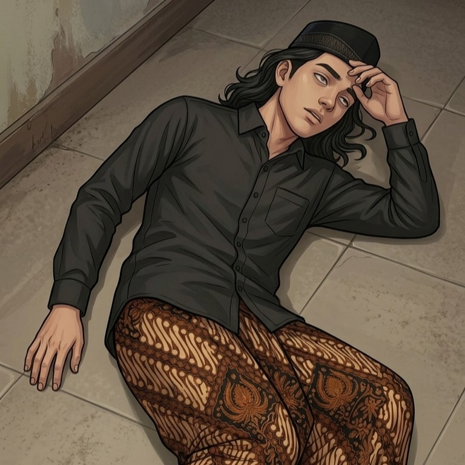
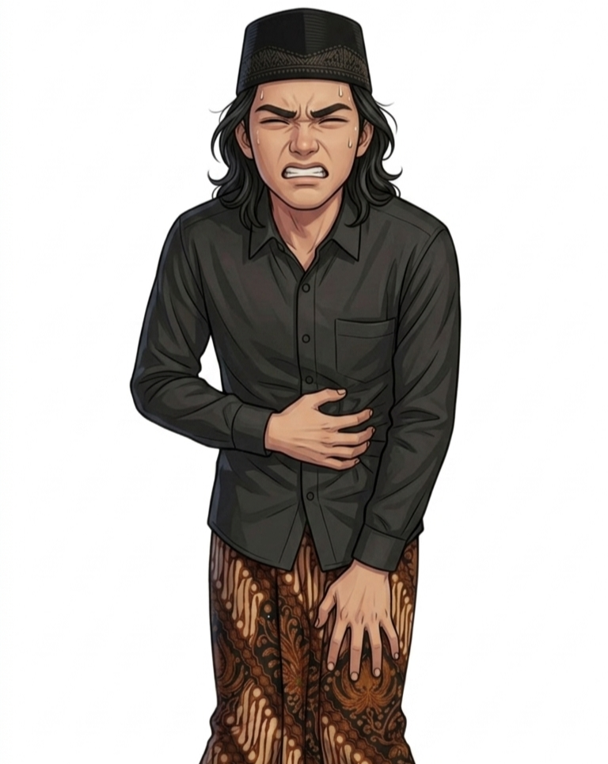
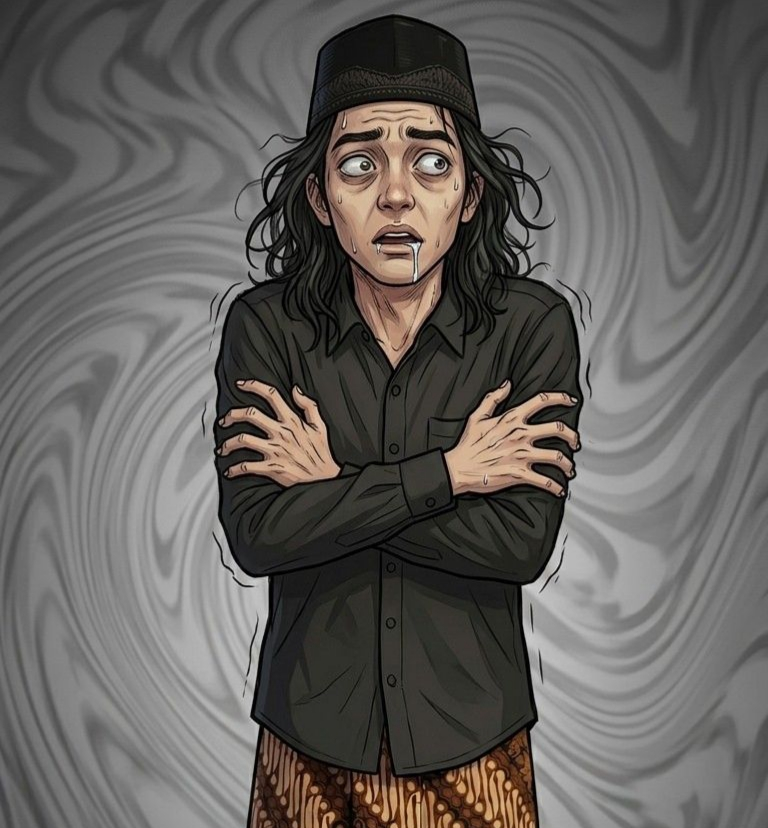
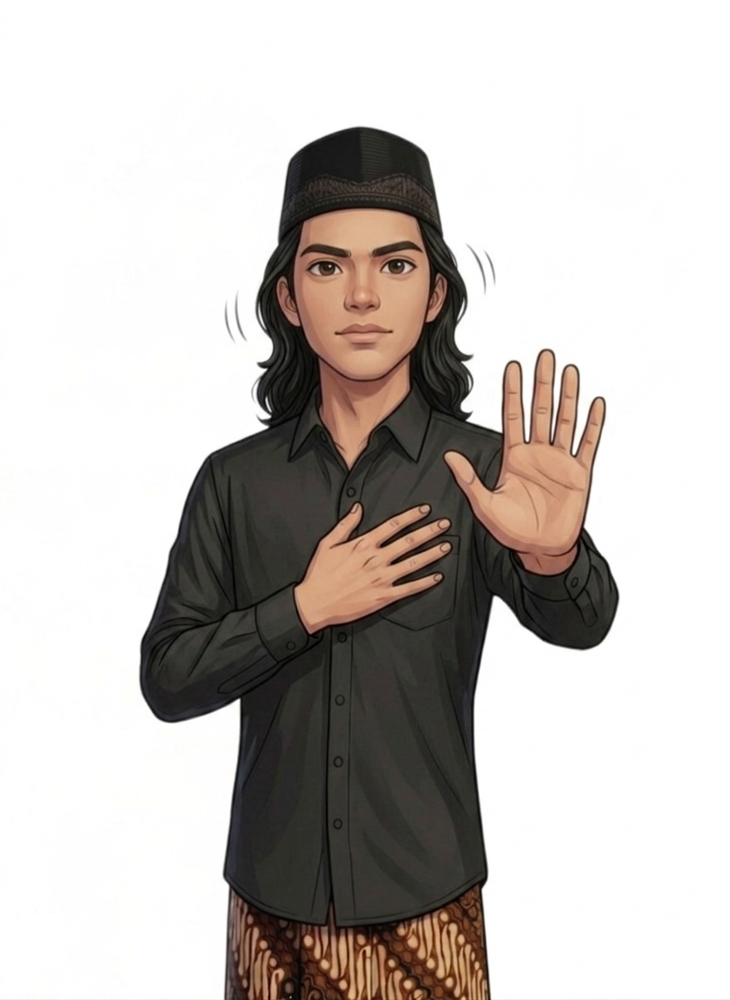
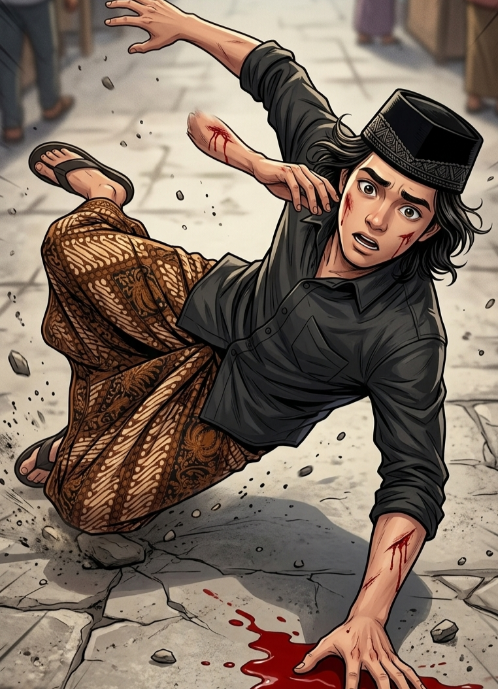

PEMBELAJARAN WUDHU
Berikut beberapa hal yang dapat membatalkan wudhu sehingga seseorang perlu berwudhu kembali sebelum beribadah.
Menjaga wudhu sangat penting sebelum melaksanakan ibadah. Jika wudhu batal maka diwajibkan untuk berwudhu kembali agar ibadah tetap sah.
Pembatalan Wudhu
Pembelajaran Islami
Interactive UI
Jika wudhu batal maka wajib mengulang wudhu sebelum melaksanakan ibadah seperti shalat.

Tidur yang terlalu nyenyak dapat membatalkan wudhu karena hilangnya kesadaran seseorang.

Segala sesuatu yang keluar dari qubul atau dubur seperti buang air kecil dan besar membatalkan wudhu.

Pingsan, mabuk, atau hilang kesadaran termasuk hal yang membatalkan wudhu.

Menyentuh kemaluan dengan telapak tangan secara langsung dapat membatalkan wudhu.

Sebagian ulama berpendapat darah yang keluar banyak dapat membatalkan wudhu.
Biasakan memperbaharui wudhu sebelum melaksanakan ibadah.
Menjaga kebersihan tubuh dan pakaian setiap saat.
Membaca doa sesudah wudhu untuk menyempurnakan ibadah.
Tidur nyenyak yang menyebabkan hilangnya kesadaran dapat membatalkan wudhu.
Sebagian ulama berpendapat darah banyak dapat membatalkan wudhu.
“Allah menyukai orang-orang yang mensucikan diri.”
QS. At-Taubah : 108